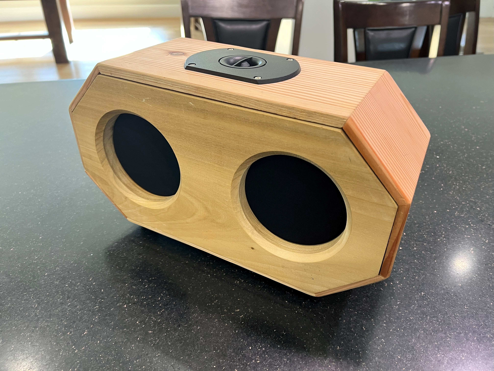
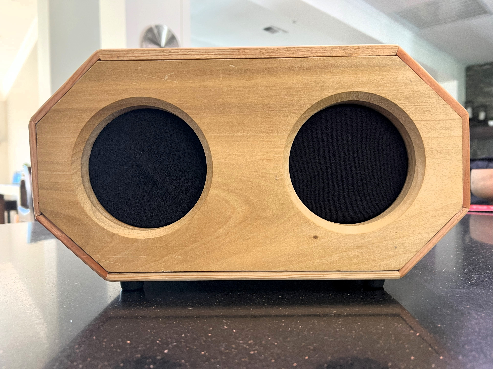
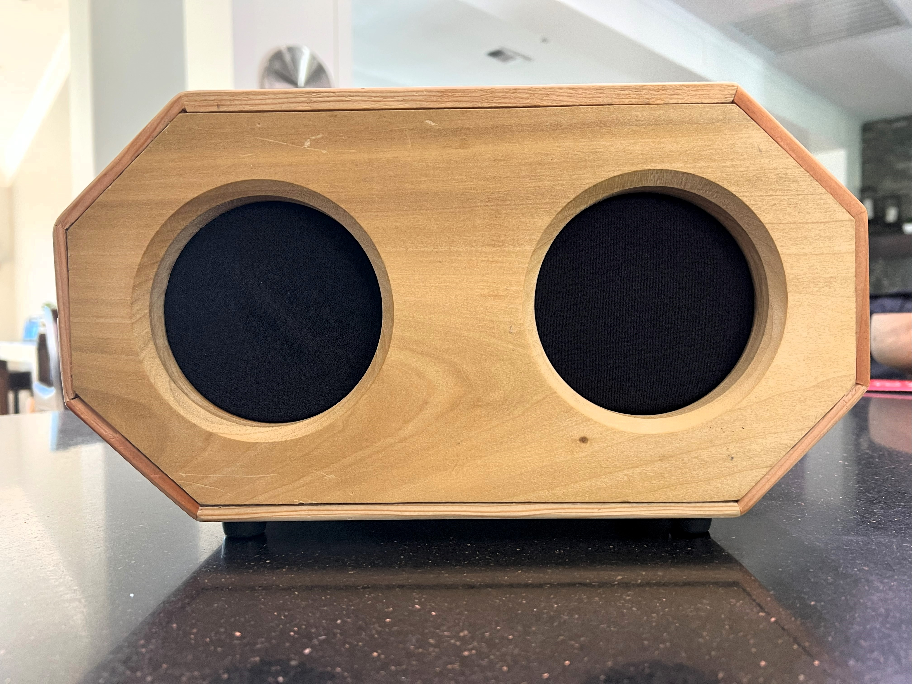

Custom Speaker
Design
The design includes:
- 2 woofers (for the low to mid sound frequencies)
- 1 tweeter (for the high sound frequencies)
I used an octahedral design because I thought it looked better. It also allows me to excercise my trigonometry skills.
Technical Drawing:
Math
In order to calculate the side lengths of the octagon, I used these formulas I derived using basic trig and geometry concepts. The shape is a regular octagon with the top and bottom sides extended. \[S_{1} = {2a \tan \frac{1}{2} \theta}\] \[S_{2} = W - \sqrt{2}S_{1}\] \( a = apothem \\ \theta = angle \ between \ apothems \\ W = the \ width \ of \ the \ speaker \\ S_{1} = short \ side \ length \\ S_{2} = long \ side \ length \)
For me, my values were
\( a = 3.75 \\ \theta = 45^\circ \\ W = 15 \\ S_{1} = 3.11 \\ S_{2} = 10.6 \)
with units in inches except for angles
Build Process
- Draft the speaker on a piece of paper and designed it in Fusion 360
- Calculate the side lengths using trigonometry and the formulas above
- Cut 5"x0.75" wood vertically on the miter saw
- Use the table saw to make rabbet cuts for the front and back plates of the speaker to slot in
- Use the miter saw to make 22.5 degree cuts so the boards glue together to form the octagon
- Glue the sides together and hold it together with tape while drying
- Cut out the front and back plates on the miter saw
- Drill the holes for the speaker, tweeter, and port on the back using hole saws of the correct size
- Chamfer the woofer holes with a router
- Sand with a table sander
- Drill pilot holes for the screws to hold the woofers and the tweeter
- Apply a beeswax finish to the wood for aesthetics and to protect the wood
- Solder all of the components together
- Screw in woofers with felt covering
- Screw in tweeter
- Solder all of the electronics together according to the schematic
- Add foam to improve sound quality
- Glue down the amp

Result
 

My Thoughts
Overall, I am very happy with the outcome of my speaker. However, it didn't go perfect. You can see some inaccuracies. For example, the slots on the top and bottom wood pieces are from cutting the pieces incorrectly on the table saw.
The sound quality was also good to. It wasn't better than a good quality speaker, but it sounded better than some cheap knockoff brand speakers.